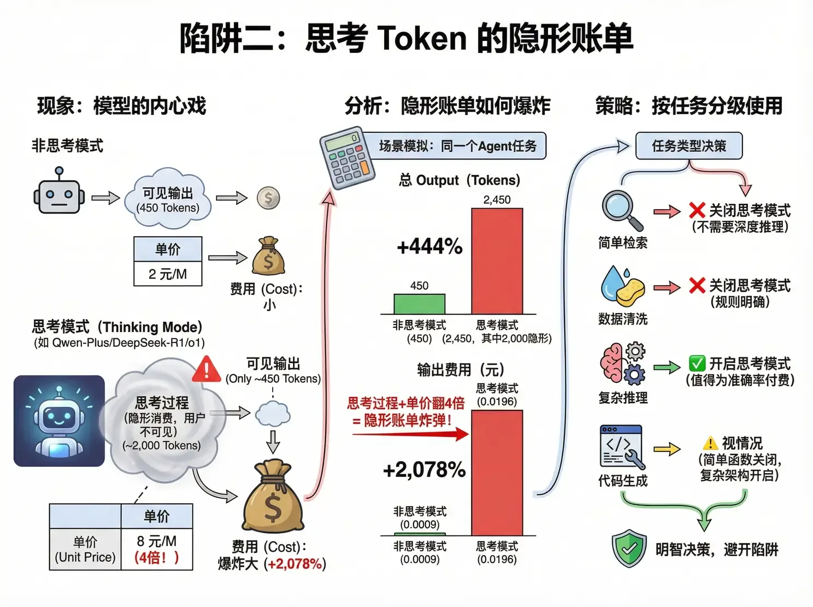
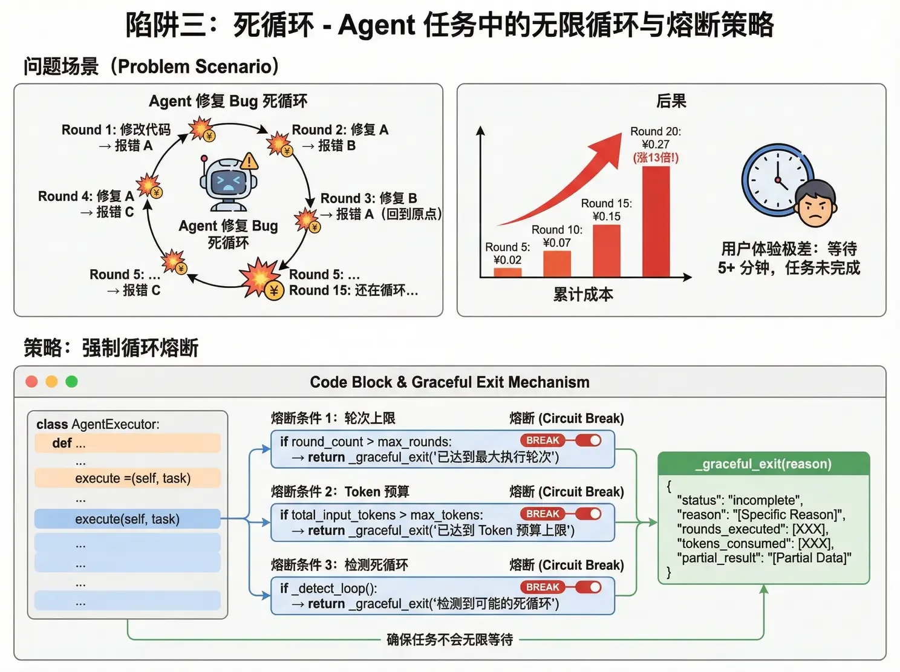

Agent 四大成本陷阱与熔断
上一节看到的还只是「一次成功的执行」。真实世界里，Agent 的账单事故来自四个方向：工具返回爆炸、思考税、死循环、历史雪球。每一个都有对应的工程解法。
用户说「帮我查一下数据库里所有用户的订单」，Agent 调 SQL 工具返回 10,000 条记录 ≈ 500,000 Token。这 50 万 Token 会被塞进下一轮 Input：直接触发高价区、甚至撑爆上下文窗口，模型还会因信息过载而「迷失」，输出质量反而下降。解法是给所有工具套一层截断保护：

Qwen-Plus 思考模式、DeepSeek-R1、o1 这类模型会生成「思考过程」：用户可能看不到，但全部按 Output 计费，而且单价还翻 4 倍（Qwen-Plus 非思考输出 2 元/M，思考模式 8 元/M）。同一个 Agent 任务开启思考模式后：可见输出不变（450 Token），思考过程 +2,000 Token，输出费用暴涨 +2,078%。
| 任务类型 | 思考模式 | 理由 |
|---|---|---|
| 简单检索 | ❌ 关闭 | 不需要深度推理 |
| 数据清洗 | ❌ 关闭 | 规则明确，不需要「想」 |
| 复杂推理 | ✅ 开启 | 值得为准确率付费 |
| 代码生成 | ⚠️ 视情况 | 简单函数关闭，复杂架构开启 |
进阶解法：用 0.6B 级的极小模型做前置分诊，先花几厘钱判断这个请求需不需要深度思考，再决定路由到哪个模式——这就是第 3 节「T2 给 T0 打下手」的具体形态。

Agent 修 Bug：修复 A → 报错 B → 修复 B → 报错 A（回到原点）→ …… 15 轮还在转。每轮 Input 膨胀 1,000 Token 的话，20 轮下来成本涨 13 倍；更糟的是用户等了 5 分钟任务还没完成。解法是强制熔断，三个条件任一命中就优雅退出：
优雅退出时要带上 rounds_executed、tokens_consumed 和 partial_result——半成品也比黑洞强。

标准做法（错误）是每轮都把完整历史塞进 Input。优化做法是固定左侧 + 压缩历史 + 保留最近 N 轮：System Prompt 永不压缩（保缓存前缀），最近 3 轮保留完整细节，更早的历史用小模型压成一句摘要。
| 方案 | 第 10 轮 Input | 说明 |
|---|---|---|
| 无限膨胀 | ~50,000 Tokens | 包含全部历史 |
| 滑动窗口（最近 5 轮） | ~12,000 Tokens | 丢失早期上下文 |
| 固定 + 摘要 + 最近 3 轮 | ~6,000 Tokens | 既保关键信息，又控制长度 |
| 控制点 | 策略 | 预期收益 |
|---|---|---|
| 工具返回值 | 截断 + 摘要，上限 2k Tokens | 防止单轮爆炸 |
| 历史管理 | 固定左侧 + 压缩旧历史 | 降低 50%+ Input |
| 循环控制 | 熔断机制（轮次 / Token / 死循环检测） | 防止无底洞 |
| 思考模式 | 按任务分级开启 | Output 成本降 4 倍 |
| 模型选择 | 简单子任务用小模型 | 降低单价 |
| 缓存利用 | 固定 System Prompt，命中 KV Cache | Input 成本降 90% |
| 红线 | 阈值建议 | 后果 | 应对 |
|---|---|---|---|
| 单轮 Input | < 32k Tokens | 跳入高价区 | 历史压缩 + 工具截断 |
| 总轮次 | < 10 轮 | 成本指数膨胀 | 熔断机制 |
| I/O Ratio | 监控 > 50:1 | Agent 在「空转」 | 优化流程或降级任务 |
给工具返回值设 2k 上限：截断 + 摘要 + 提示缩小范围，防止单轮 Input 爆炸。
思考模式按任务分级：看不见的内心戏也按 Output 计费，单价还翻 4 倍。
熔断是 Agent 的保险丝：轮次、Token 预算、死循环检测三选一命中就优雅退出。
历史管理用「固定 + 摘要 + 最近 3 轮」，比粗暴滑动窗口省一半还不失忆。
内容来源：整理自作者团队内部分享《AI Token 降本增效策略分享》「Agentic 应用的计费机制」。Agent 卡死与防呆的产品视角在动手实战篇有专门章节，上下文压缩另见Harness 核心 · 上下文溢出。